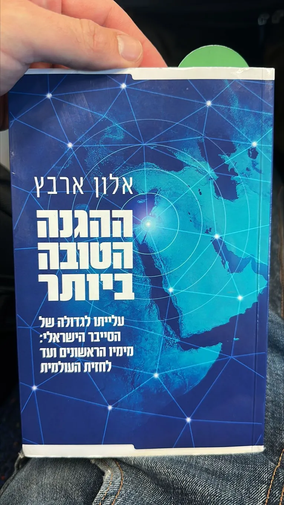

Lessons from Alon Arvatz’s book on Israeli cyber
Originally posted on LinkedIn, August 23, 2023.
Alon Arvatz founded a cybersecurity startup and sold it for $350 million. He then stepped away from building companies long enough to document the cyber industry, one of the main engines of Israeli tech.
He interviewed dozens of CEOs, founders, and venture fund managers, bringing their stories and insights together in one excellent book. It offers a close look at both defensive and offensive cyber, as well as the startup and venture capital world around them. I consider it essential reading for any founder or tech professional.
Beyond the inspiration, I learned where NSO’s name came from, which made me laugh out loud. I also enjoyed reading “the other side” of its story instead of only hearing from the company’s critics.
I finally learned what bootstrap means, even though I had built a startup that way without knowing the term. I had also heard founders use the term sunrise, and now I know where it comes from.
The book reinforced the need for a playbook and showed why succeeding alone is almost impossible. I was especially drawn to the offensive cyber stories, which are usually shared only with insiders.
Thank you, Alon Arvatz, for creating this resource.
